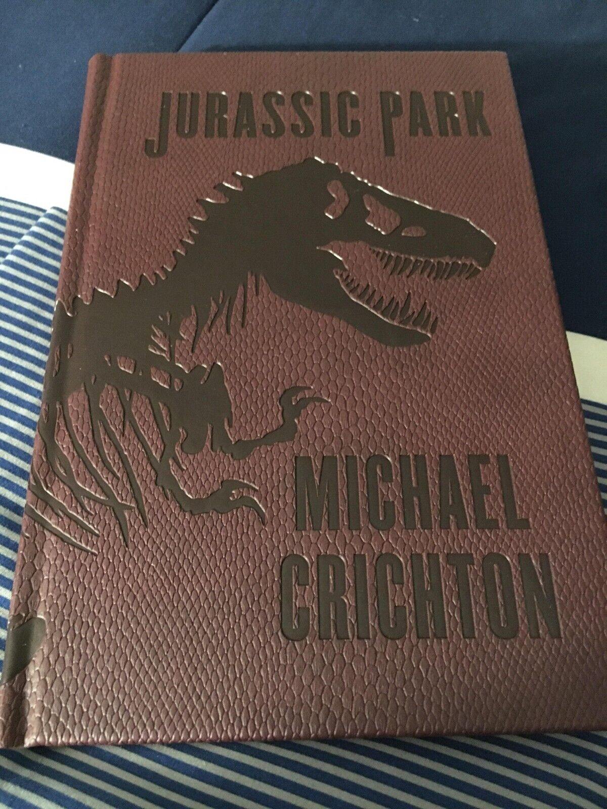
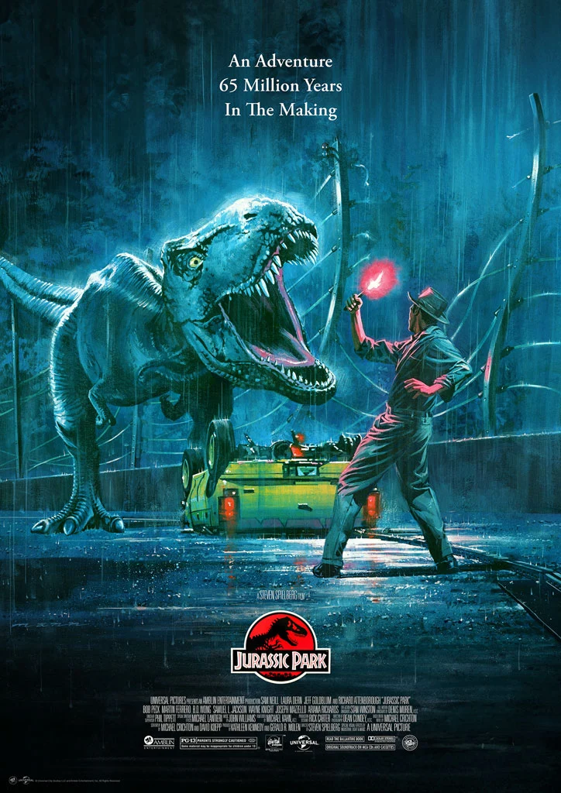
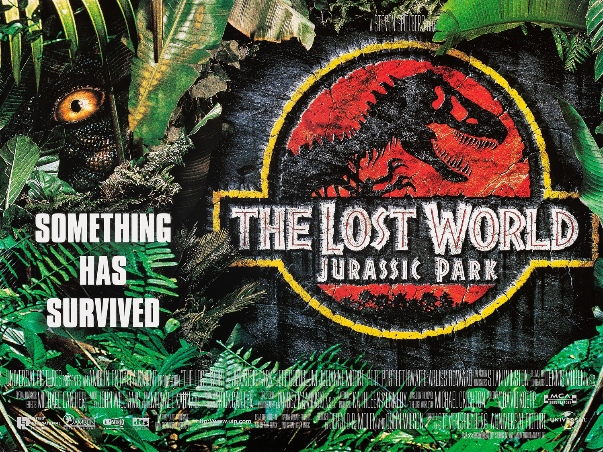
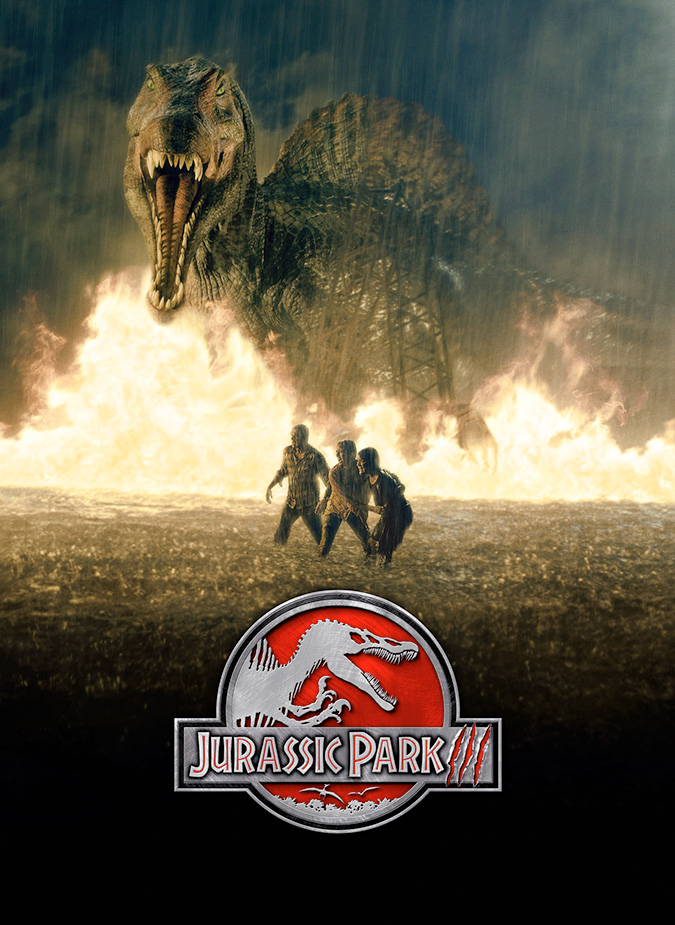
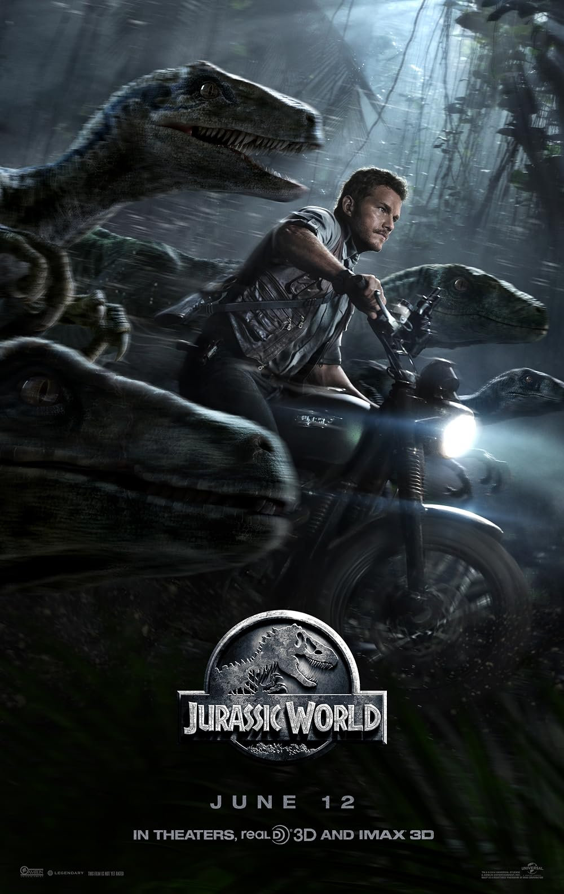
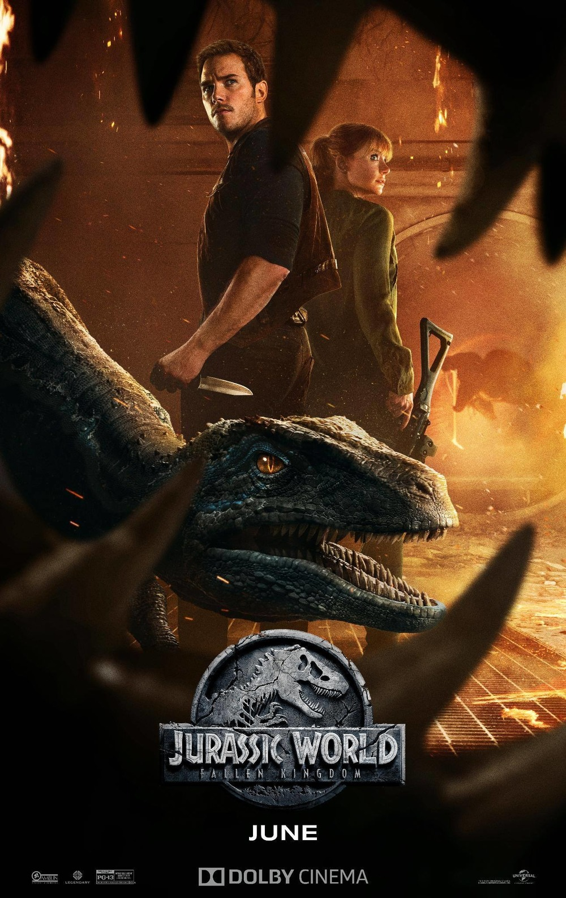
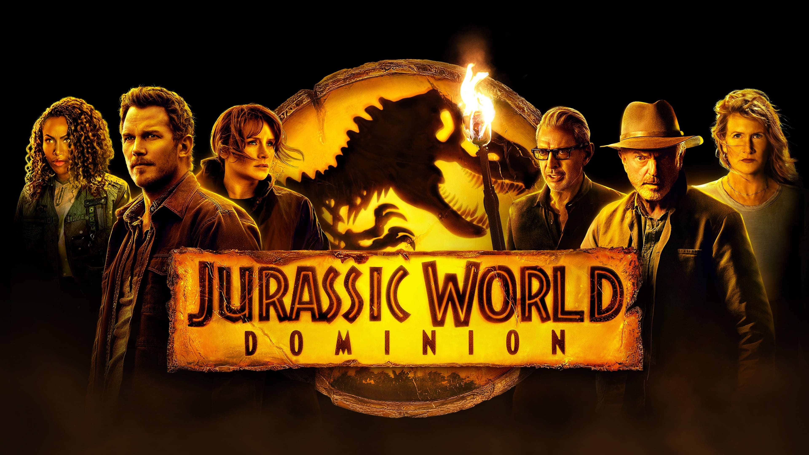

.png)
The wonderus world of Jurassic Park
The Jurassic Park series began with Michael Crichton's 1990 novel, which was adapted into the 1993 film directed by Steven Spielberg, revolutionizing cinema with its realistic computer-generated dinosaurs and blending suspenseful storytelling with scientific imagination. Following the success of the original, The Lost World: Jurassic Park continued the adventure, exploring the moral and ecological consequences of cloning and the tentative coexistence of humans and dinosaurs. After a gap in the franchise, Jurassic Park III offered a more action-oriented approach with a new storyline, while maintaining continuity through returning characters. The series was revitalized in the 2015 sequel, Jurassic World, which reimagined the park concept for a modern audience, introducing genetically modified dinosaurs and a new cast, reflecting both corporate greed and human curiosity. Jurassic World: Fallen Kingdom and Jurassic World Dominion expanded the narrative globally, showcasing the consequences of dinosaurs existing in the wider environment and connecting legacy characters with the new generation. Throughout its development, the franchise has consistently evolved its visual effects, storytelling scope, and thematic depth, maintaining cultural relevance and cementing its status as a major cinematic phenomenon.






